DYN HA / SS22 FUB / Clara Liso
St. Schwarz
2022-12-10
A. head
1. einleitung
2. u. wolf
3. corpus aufbereitung
4. some visualisations
4.1 basic statistics
## [1] "/Users/lion/boxHKW/21S/DH/gith/DH_essais/sections/DYN/DYN_HA"4.3 sentiment
4.3.1 visualisation
 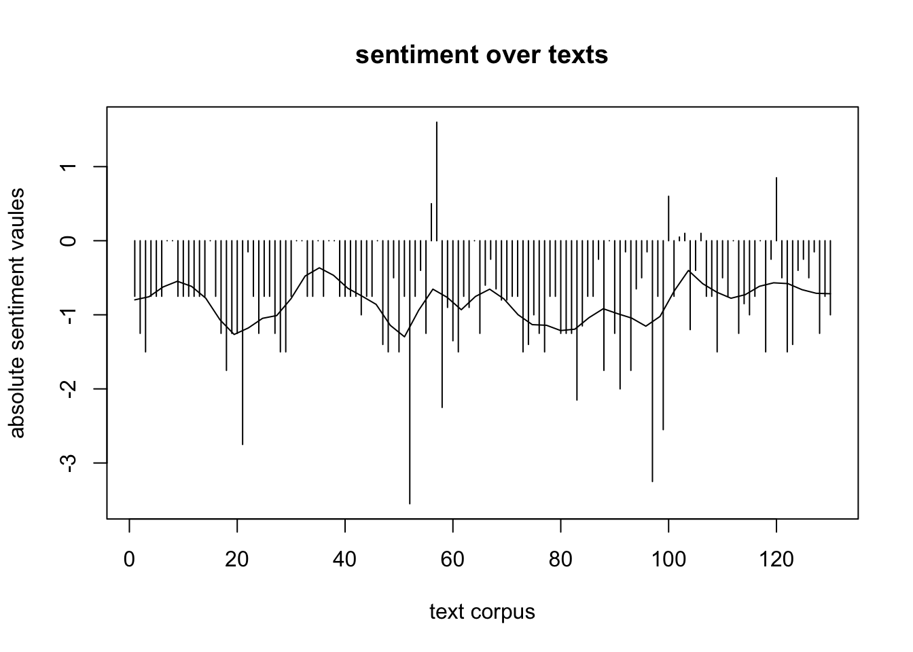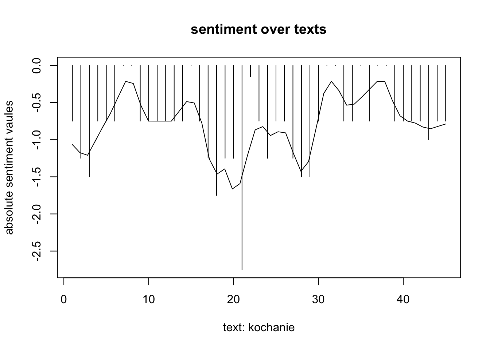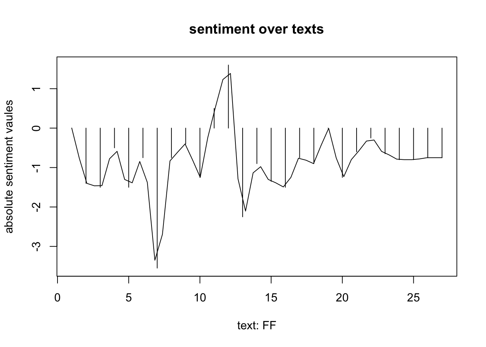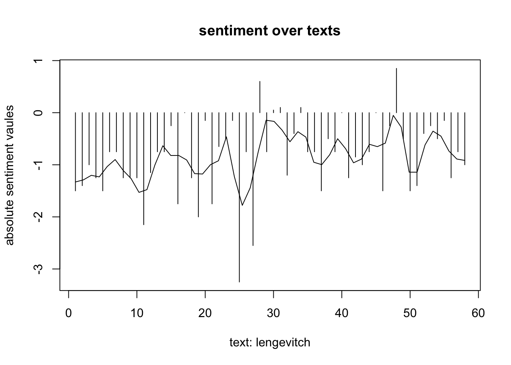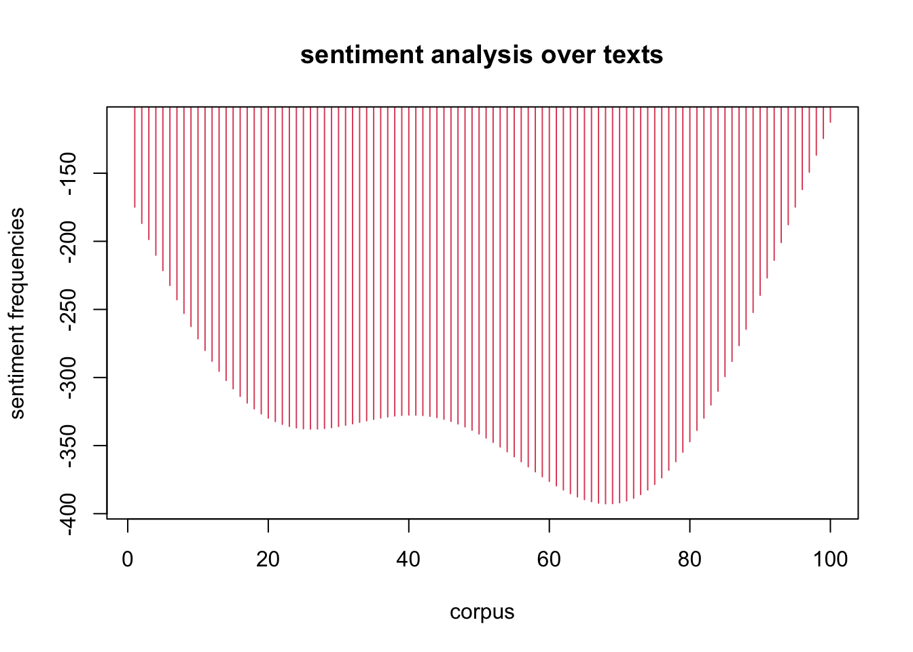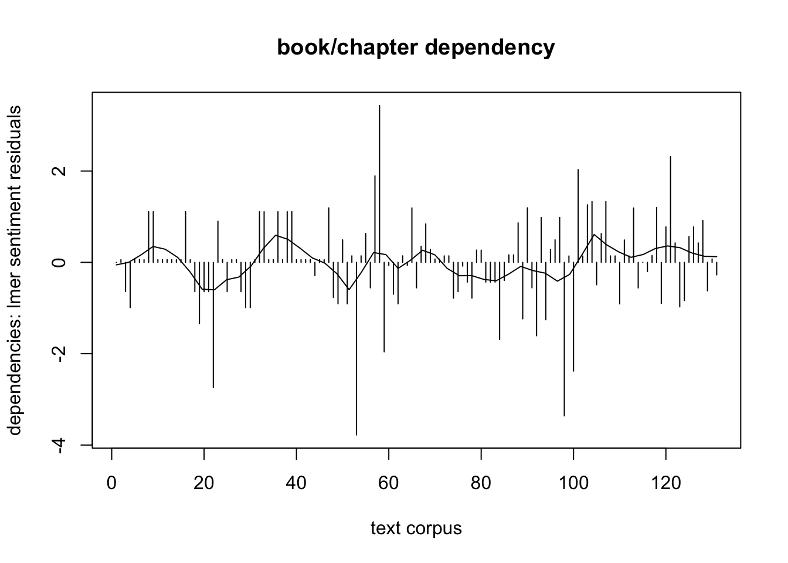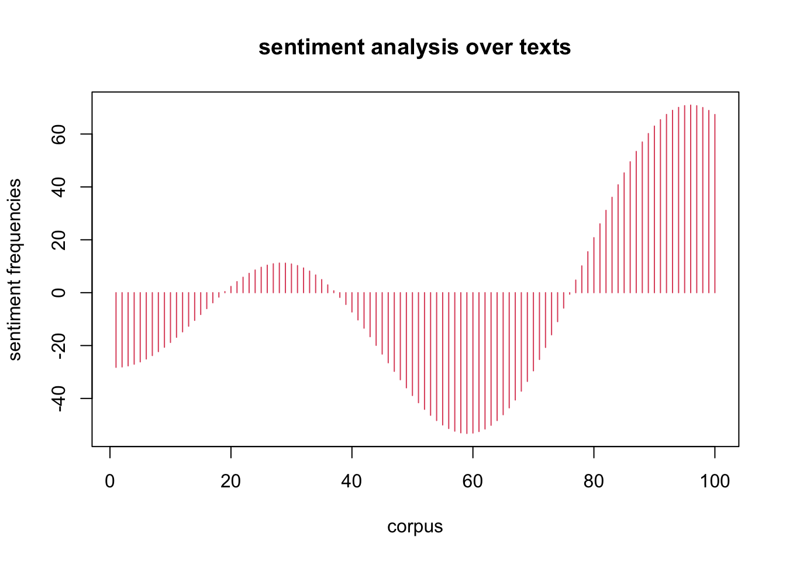
Q: cf. (Jockers 2015)
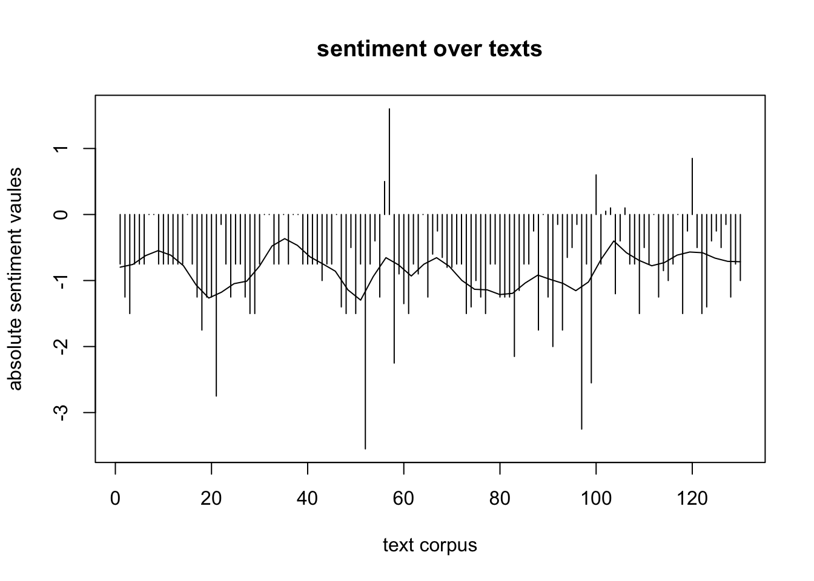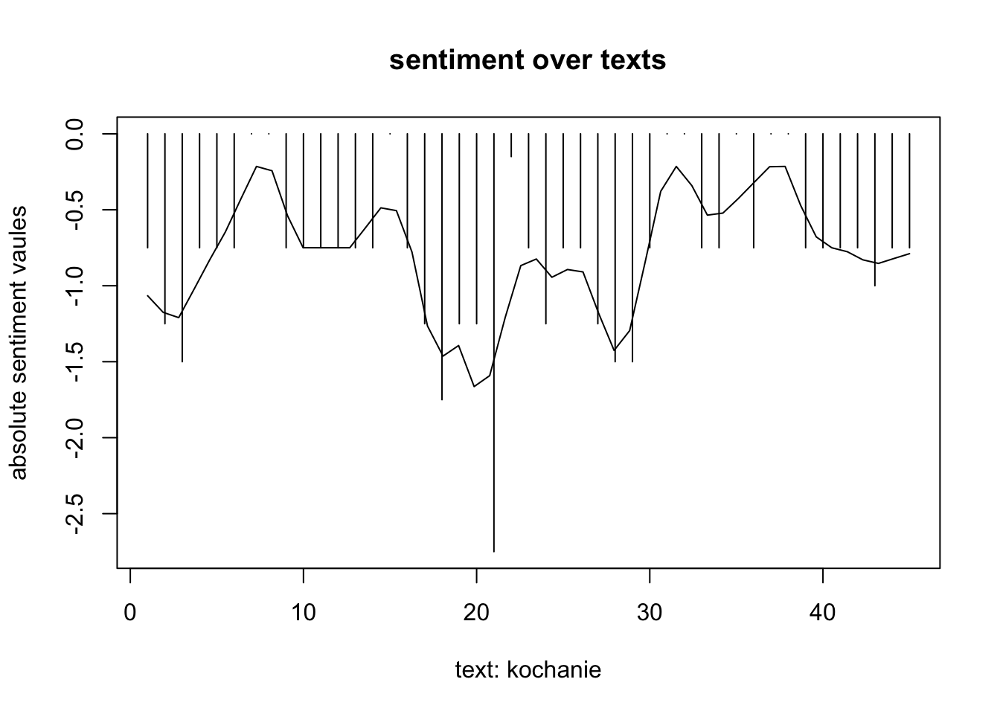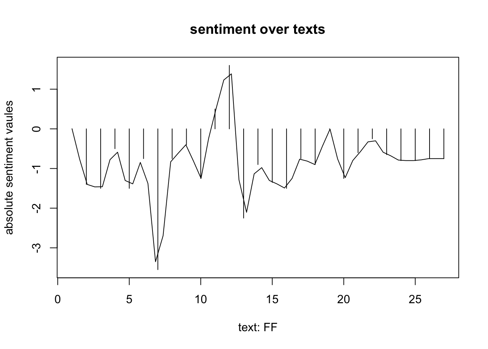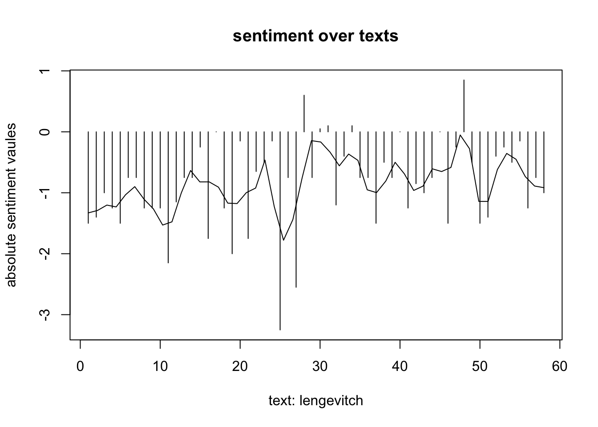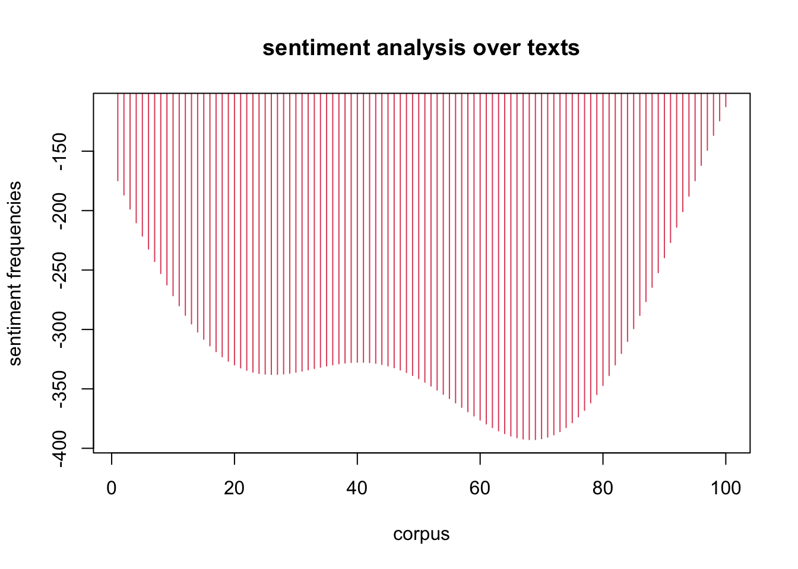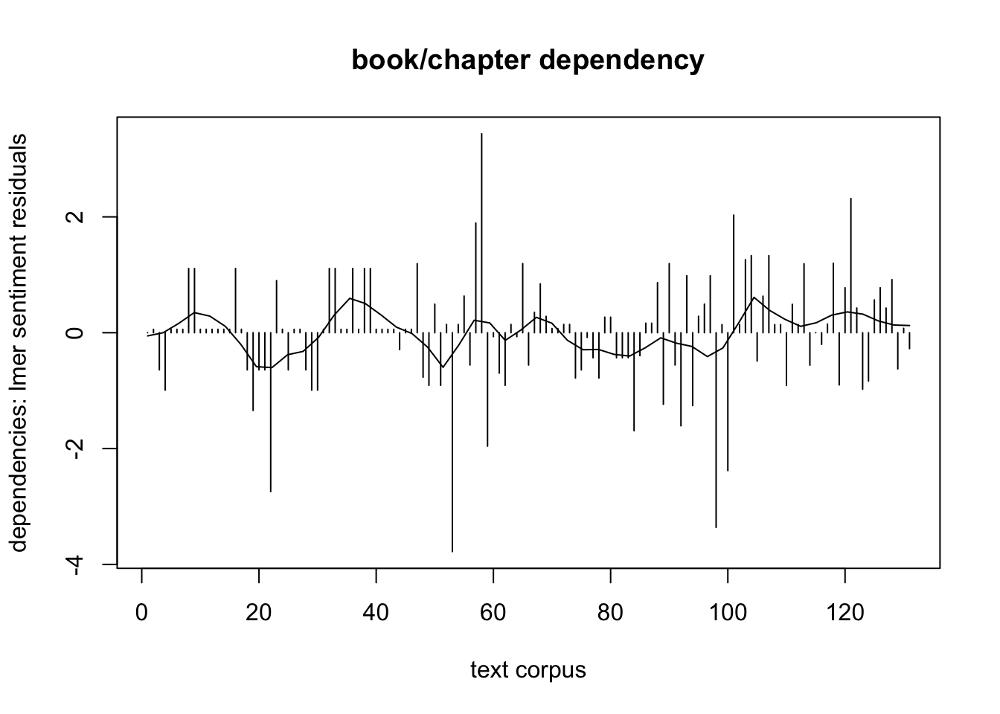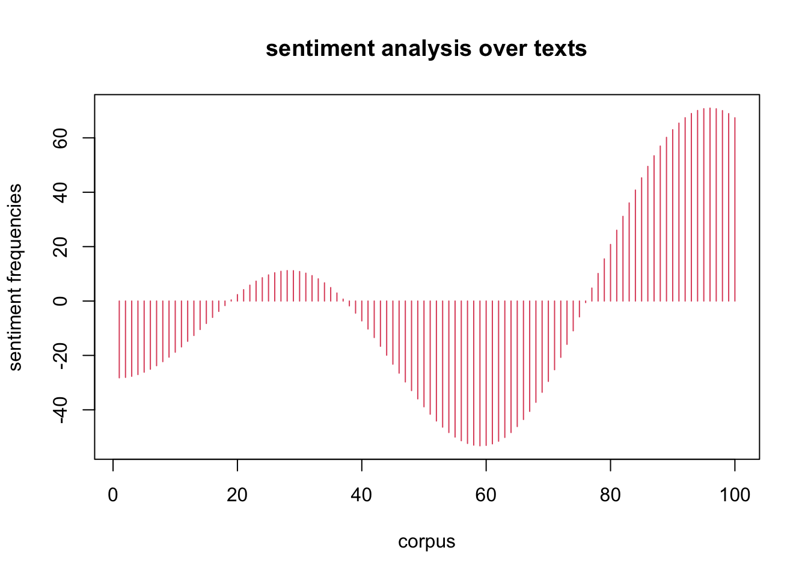
Q: cf. (Jockers 2015)
4.3.2 data
summary:
## [[1]]
## NULL
##
## [[2]]
## [[2]]$min
## [[2]]$min$head
## [1] "IV" "V legnica /liegnitz"
##
## [[2]]$min$book
## [1] "kochanie" "kochanie"
##
## [[2]]$min$chapter
## [1] "kochanie ich habe brot gekauft" "kochanie ich habe brot gekauft"
##
## [[2]]$min$id
## [1] "126" "127"
##
## [[2]]$min$words
## [1] "wir" "uns"
##
##
## [[2]]$max
## [[2]]$max$head
## [1] "reisende" "übersetzen" "post" "knirschen II" "I"
##
## [[2]]$max$book
## [1] "kochanie" "kochanie" "kochanie" "kochanie" "kochanie"
##
## [[2]]$max$chapter
## [1] "kochanie ich habe brot gekauft" "kochanie ich habe brot gekauft"
## [3] "kochanie ich habe brot gekauft" "kochanie ich habe brot gekauft"
## [5] "kochanie ich habe brot gekauft"
##
## [[2]]$max$id
## [1] "129" "130" "133" "135" "136"
##
## [[2]]$max$words
## [1] "no duplicate words"
##
##
##
## [[3]]
## [[3]]$min
## [[3]]$min$head
## [1] "kreisau, nebelvoliere"
##
## [[3]]$min$book
## [1] "kochanie"
##
## [[3]]$min$chapter
## [1] "krzyżowa, gefährten"
##
## [[3]]$min$id
## [1] "142"
##
## [[3]]$min$words
## [1] "brust" "ein" "halb" "du" "mich" "ich" "vogel" "dein"
##
##
## [[3]]$max
## [[3]]$max$head
## [1] "an die kreisauer hunde" "nachtrag an die kreisauer hunde"
##
## [[3]]$max$book
## [1] "kochanie" "kochanie"
##
## [[3]]$max$chapter
## [1] "krzyżowa, gefährten" "krzyżowa, gefährten"
##
## [[3]]$max$id
## [1] "143" "144"
##
## [[3]]$max$words
## [1] "euch" "gehört" "jeden" "meine"
##
##
##
## [[4]]
## [[4]]$min
## [[4]]$min$head
## [1] "fall - falls - fast - fell - flog"
##
## [[4]]$min$book
## [1] "FF"
##
## [[4]]$min$chapter
## [1] "DICHTionary"
##
## [[4]]$min$id
## [1] "7"
##
## [[4]]$min$words
## [1] "dir"
##
##
## [[4]]$max
## [[4]]$max$head
## [1] "kau - kind - kiss ~en"
##
## [[4]]$max$book
## [1] "FF"
##
## [[4]]$max$chapter
## [1] "DICHTionary"
##
## [[4]]$max$id
## [1] "12"
##
## [[4]]$max$words
## [1] "du" "ein"
##
##
##
## [[5]]
## [[5]]$min
## [[5]]$min$head
## [1] "REDE MIT AUFGEPICKTEM WORT"
##
## [[5]]$min$book
## [1] "lengevitch"
##
## [[5]]$min$chapter
## [1] "BRICKLEBRIT"
##
## [[5]]$min$id
## [1] "40"
##
## [[5]]$min$words
## [1] "zügel" "mit" "steht" "nicht" "man"
## [6] "schabracke" "flur" "hier"
##
##
## [[5]]$max
## [[5]]$max$head
## [1] "REDE MIT LANGEN LEINEN" "KLEINE STERNMULLREDE"
##
## [[5]]$max$book
## [1] "lengevitch" "lengevitch"
##
## [[5]]$max$chapter
## [1] "BRICKLEBRIT" "BRICKLEBRIT"
##
## [[5]]$max$id
## [1] "34" "35"
##
## [[5]]$max$words
## [1] "lining" "man" "fütterung" "nicht" "gedieht"
## [6] "ein" "ohne" "gewissheit" "du"
##
##
##
## [[6]]
## [[6]]$min
## [[6]]$min$head
## [1] "TIMISOARA"
##
## [[6]]$min$book
## [1] "lengevitch"
##
## [[6]]$min$chapter
## [1] "MITTENS"
##
## [[6]]$min$id
## [1] "47"
##
## [[6]]$min$words
## [1] "halb" "" "sie" "lautet" "erste" "zeile" "mit"
## [8] "fluss" "während" "vorhang" "ein"
##
##
## [[6]]$max
## [[6]]$max$head
## [1] "CORDOBA"
##
## [[6]]$max$book
## [1] "lengevitch"
##
## [[6]]$max$chapter
## [1] "MITTENS"
##
## [[6]]$max$id
## [1] "46"
##
## [[6]]$max$words
## [1] "" "wir" "jedes" "nach" "ein" "uns" "mit"
##
##
##
## [[7]]
## [[7]]$min
## [[7]]$min$head
## [1] "III"
##
## [[7]]$min$book
## [1] "lengevitch"
##
## [[7]]$min$chapter
## [1] "KALTE KÜCHE"
##
## [[7]]$min$id
## [1] "51"
##
## [[7]]$min$words
## [1] "ein"
##
##
## [[7]]$max
## [[7]]$max$head
## [1] "I"
##
## [[7]]$max$book
## [1] "lengevitch"
##
## [[7]]$max$chapter
## [1] "KALTE KÜCHE"
##
## [[7]]$max$id
## [1] "49"
##
## [[7]]$max$words
## [1] "fichten" "für"
##
##
##
## [[8]]
## [[8]]$min
## [[8]]$min$head
## [1] "a"
##
## [[8]]$min$book
## [1] "lengevitch"
##
## [[8]]$min$chapter
## [1] "METHOD ACTING MIT ANNA 0."
##
## [[8]]$min$id
## [1] "59"
##
## [[8]]$min$words
## [1] "zeit" "für" "orangen" "no" "nicht"
## [6] "viel" "ich" "rundum" "wand" "orange"
## [11] "sie" "stundenlang" "keeps" "me" "wärterin"
## [16] "mit" "täglich" "sies" "gedacht" "ehe"
## [21] "tee" "keine" "time" "wasser" "eignes"
## [26] "weil" "züge" "brücken" "schiffchen" "lack"
## [31] "zeiten" "were" "mangel" "ihr" "geh"
## [36] "esse" "doktor"
##
##
## [[8]]$max
## [[8]]$max$head
## [1] "d"
##
## [[8]]$max$book
## [1] "lengevitch"
##
## [[8]]$max$chapter
## [1] "METHOD ACTING MIT ANNA 0."
##
## [[8]]$max$id
## [1] "62"
##
## [[8]]$max$words
## [1] "my"
##
##
##
## [[9]]
## [[9]]$min
## [[9]]$min$head
## [1] "c"
##
## [[9]]$min$book
## [1] "lengevitch"
##
## [[9]]$min$chapter
## [1] "SPITZEN"
##
## [[9]]$min$id
## [1] "72"
##
## [[9]]$min$words
## [1] "they" "ohr" "pine" "collar" "form"
##
##
## [[9]]$max
## [[9]]$max$head
## [1] "g"
##
## [[9]]$max$book
## [1] "lengevitch"
##
## [[9]]$max$chapter
## [1] "SPITZEN"
##
## [[9]]$max$id
## [1] "75"
##
## [[9]]$max$words
## [1] "schaut"
##
##
##
## [[10]]
## [[10]]$min
## [[10]]$min$head
## [1] "IV"
##
## [[10]]$min$book
## [1] "lengevitch"
##
## [[10]]$min$chapter
## [1] "BOUGAINVILLE"
##
## [[10]]$min$id
## [1] "82"
##
## [[10]]$min$words
## [1] "nach" "sag"
##
##
## [[10]]$max
## [[10]]$max$head
## [1] "III"
##
## [[10]]$max$book
## [1] "lengevitch"
##
## [[10]]$max$chapter
## [1] "BOUGAINVILLE"
##
## [[10]]$max$id
## [1] "81"
##
## [[10]]$max$words
## [1] "finde" "sie" "mit"
##
##
##
## [[11]]
## [[11]]$min
## [[11]]$min$head
## [1] "BABELTRACK\n\n(NOTIZEN ZU EINER LENGEVITCH)"
##
## [[11]]$min$book
## [1] "lengevitch"
##
## [[11]]$min$chapter
## [1] "BABELTRACK"
##
## [[11]]$min$id
## [1] "87"
##
## [[11]]$min$words
## [1] "ich" "wollte" "man" "kind" "stehlen" "mein" "warum"
## [8] "tal" "kommen" "mich" "meinen" "ihr"
##
##
## [[11]]$max
## [[11]]$max$head
## [1] "BABELTRACK\n\n(NOTIZEN ZU EINER LENGEVITCH)"
##
## [[11]]$max$book
## [1] "lengevitch"
##
## [[11]]$max$chapter
## [1] "BABELTRACK"
##
## [[11]]$max$id
## [1] "85"
##
## [[11]]$max$words
## [1] "werden" "milchbahnen" "festländer" "insel" "sprache"
## [6] "macht" "mit" "blase" "sie"Zur Erklärung: Die höchsten sentiment Werte, hier zb. im
Kapitel krzyżowa, gefährten, krzyżowa, gefährten lassen
sich in
an die kreisauer hunde, nachtrag an die kreisauer hunde
finden. Die most frequent words dieses Abschnitts sind
euch, gehört, jeden, meine, die niedrigsten finden sich im
Text kreisau, nebelvoliere mit
brust, ein, halb, du, mich, ich, vogel, dein.
4.5 varianzen
B. REF:
Jockers, Matthew. 2015. “» Revealing
Sentiment and Plot Arcs with the
Syuzhet Package Matthew
L. Jockers.” https://www.matthewjockers.net/2015/02/02/syuzhet/.
LS0tCiMtLS0gb2ZmaWNpYWwgLS0tIwojIEhhdXNhcmJlaXQgaW0gU2VtaW5hcjogRHluYW1pa2VuIHBvc3RkZXV0c2NoZXIgR2VnZW53YXJ0c2xpdGVyYXR1ciwgQ2xhcmEgTGlzbywgU1MyMDIyIEZVQgojIGltIEZhY2g6IEFsbGdlbWVpbmUgdW5kIFZlcmdsZWljaGVuZGUgTGl0ZXJhdHVyd2lzc2Vuc2NoYWZ0ZW4KIyBlaW5nZXJlaWNodCB2b24gU3RlcGhhbiBTY2h3YXJ6CiMgQWJnYWJlOiBkdWUKCnRpdGxlOiAiRFlOIEhBIC8gU1MyMiBGVUIgLyBDbGFyYSBMaXNvIgphdXRob3I6ICJTdC4gU2Nod2FyeiIKZGF0ZTogImByIFN5cy5EYXRlKClgIgp6b3Rlcm86IEFWTF9keW4Kb3V0cHV0OiAKICBodG1sX2RvY3VtZW50OgogICAgY29kZV9kb3dubG9hZDogeWVzCiAgICB0b2M6IHllcwogICAgdG9jX2Zsb2F0OgogICAgICBjb2xsYXBzZWQ6IG5vCiAgICAgIHNtb290aF9zY3JvbGw6IG5vCiAgICBzZWxmX2NvbnRhaW5lZDogRkFMU0UgI1RSVUUgZm9yIHN0YW5kYWxvbmUgaHRtbCBwYWdlIGtuaXQKICAgICNjc3M6IC4uL3N0eWxlX0hBLmNzcwojc3dhcCAvIGRlY29tbWVudCBmZiAuYmliLy5jc3MgcmVmZXJlbmNlcyBmb3Igc2VsZiBjb21waWxlIC5SbWQgdG8gaHRtbAojYmlibGlvZ3JhcGh5OiBodHRwczovL3Jhdy5naXRodWJ1c2VyY29udGVudC5jb20vZXN0ZWVzY2h3YXJ6L0RIX2Vzc2Fpcy9tYWluL3NlY3Rpb25zL0RZTi9EWU5fSEEvRFlOX0hBLmJpYgogICAgY3NzOiBodHRwczovL2FkYS1zdWIucm90ZWZhZGVuYnVlY2hlci5kZS9za29vbC9wdWJsaWMvcGFwZXJzLzAxMS9zdHlsZV9IQS5jc3MKYmlibGlvZ3JhcGh5OiBEWU5fSEEuYmliCi0tLQojIEEuIGhlYWQKYGBge3Igc2V0dXAsIGluY2x1ZGU9RkFMU0V9CmtuaXRyOjpvcHRzX2NodW5rJHNldChlY2hvID0gVFJVRSkKI21pbmkgY3JpdGljYWw6IGRvbnQgZmluZCByZWxhdGl2ZSBmaWxlcyBpbiBwYXRoCiNrbml0cjo6b3B0c19rbml0JHNldChyb290LmRpcj0ifi9ib3hIS1cvMjFTL0RIIikKI2tuaXRyOjpvcHRzX2tuaXQkc2V0KGJhc2UuZGlyID0gIn4vYm94SEtXLzIxUy9ESC9naXRoL0RIX2Vzc2Fpcy9zZWN0aW9ucy9EWU4vRFlOX0hBIikKI0VXQSwgbGFwc2kKI2tuaXRyOjpvcHRzX2tuaXQkc2V0KHJvb3QuZGlyPSJ+L2JveEhLVy9VTkkvMjFTL0RIIikKI2tuaXRyOjpvcHRzX2tuaXQkc2V0KGJhc2UuZGlyID0gIn4vYm94SEtXL1VOSS8yMVMvREgvZ2l0aC9ESF9lc3NhaXMvc2VjdGlvbnMvRFlOL0RZTl9IQSIpCgpgYGAKCmBgYHtyIGV2YWw9VFJVRSwgZWNobz1GQUxTRSwgd2FybmluZz1GQUxTRSxtZXNzYWdlPUZBTFNFfQpsaWJyYXJ5KGh0dHIpCiNmZXRjaCB6b3Rlcm8gLmJpYiBvbmxpbmUKc2hhcmUgPC0gcnVuaWYoMSkKeDwtR0VUKCJodHRwczovL2FwaS56b3Rlcm8ub3JnL2dyb3Vwcy80NzEzMjQ2L2NvbGxlY3Rpb25zLzlMTlJSSlFOL2l0ZW1zL3RvcD9mb3JtYXQ9YmlidGV4IikKYmliPC1jb250ZW50KHgsInRleHQiKQp5PC10ZW1wZmlsZSgicmVmIixmaWxlZXh0ID0gIi5iaWIiKQp3cml0ZUxpbmVzKGJpYix5KQpgYGAKCi0tLQoKIyAxLiBlaW5sZWl0dW5nCgojIDIuIHUuIHdvbGYKCiMgMy4gY29ycHVzIGF1ZmJlcmVpdHVuZwoKIyA0LiBzb21lIHZpc3VhbGlzYXRpb25zCiMjIDQuMSBiYXNpYyBzdGF0aXN0aWNzCgpgYGB7ciBldmFsPVRSVUUsIGVjaG89RkFMU0UsIHdhcm5pbmc9RkFMU0UsbWVzc2FnZT1GQUxTRX0KbGlicmFyeShtb25nb2xpdGUpCmxpYnJhcnkoanNvbmxpdGUpCmxpYnJhcnkoc3l1emhldCkKbGlicmFyeShyZWFkcikKbGlicmFyeShnZ3Bsb3QyKQpsaWJyYXJ5KGxtZTQpCmxpYnJhcnkoc3RyaW5naSkKCgoKI3Jvb3Q8LSIvVXNlcnMvbGlvbi9ib3hIS1cvMjFTL0RILyIKI2xvY2FsPC1wYXN0ZTAocm9vdCwibG9jYWwvRFlOLyIpCiNzZXR3ZCgifi9ib3hIS1cvMjFTL0RIIikKI3NyYzwtIndvbGZfRkZfMS5qc29uIgojc3JjPC1wYXN0ZTAobG9jYWwsIndvbGZfRkYtTEVOXzEuanNvbiIpCmdldHdkKCkKc3JjPC0iLi4vLi4vLi4vLi4vLi4vbG9jYWwvUi9jcmVkX2dlbmVyLmNzdiIKICBjcmVkPC1yZWFkLmNzdihzcmMpCiMgIGNvbjwtIG1vbmdvKGNvbGxlY3Rpb24gPSAid29sZmRiMDAzIiwgZGIgPSJkZWFkZW5kIiwgdXJsPWNyZWQkdXJsW2NyZWQkcT09Im1vbmdvZGIiXSkKICMgICBkdGE8LWNvbiRmaW5kKCd7fScpCiNsb2NhbCBkYXRhOgogICAgc3JjPC0iLi4vLi4vLi4vLi4vLi4vbG9jYWwvRFlOL2RiL3dvbGZkYjAwMy5jc3YiCgogICAgZHRhPC1yZWFkLmNzdihzcmMpCiNrPC0yCiNkdGF0eHQ8LWFzLmRhdGEuZnJhbWUoZnJvbUpTT04oc3JjKSkKI2R0YXR4dDwtKGZyb21KU09OKHNyYykpCiNjYXQoImxvYWQgVEVJIGZyb206IixzcmMpCiAgICBzcmM8LSJEWU5fSEFfc2VtYW50aWNzLlIiCiNzb3VyY2UoIi9naXRoL0RIX2Vzc2Fpcy9zZWN0aW9ucy9EWU4vRFlOX0hBL0RZTl9IQV9zZW1hbnRpY3MuUiIpCiAgIHNvdXJjZShzcmMpCmBgYAoKYGBge3IgZWNobyA9IEZBTFNFLHdhcm5pbmc9RkFMU0V9CmBgYAoKYGBge3IgZWNobyA9IEZBTFNFLHdhcm5pbmc9RkFMU0V9CmBgYAoKIyMgNC4zIHNlbnRpbWVudAojIyMgNC4zLjEgdmlzdWFsaXNhdGlvbgpgYGB7ciBldmFsPVRSVUUsIGVjaG89RkFMU0UsIGNvbGxhcHNlPVRSVUUsIHdhcm5pbmc9RkFMU0UsbWVzc2FnZT1GQUxTRX0KI2NhbGxzIG1pcmFjbGUgZnVuY3Rpb24gZnJvbSBleHRlcm5hbCBzY3JpcHQ6CiNib29rPC0zCiNjaGFwdGVyPC0zCiNwbG90X2FiczwtMAojdGV4dDwtMgojZHRhdGFyZ2V0PC1wbG90c2VudGltZW50KGR0YXR4dCxib29rLGNoYXB0ZXIscGxvdF9hYnMsMykgI0FSRzogKHNldCxib29rLGNoYXB0ZXIsYWJzb2x1dGUpCmxlPC1kb19zZW50aW1lbnQoZHRhKQptZndfZHRhPC1saXN0KCkKZm9yIChrIGluIDI6IGxlbmd0aChjaGFwdGVyX2V4KSl7CiAgCgptZndfZHRhW1trXV08LW1mdyhkdGEsaykKfQojbWZ3X2R0YVtbM11dJG1heCRpZApgYGAKUTogY2YuIFtbQGpvY2tlcnNfMjAxNV1dKGh0dHBzOi8vd3d3Lm1hdHRoZXdqb2NrZXJzLm5ldC8yMDE1LzAyLzAyL3N5dXpoZXQvKQoKIyMjIDQuMy4yIGRhdGEKc3VtbWFyeToKYGBge3IgZWNobz1GfQpwcmludCAobWZ3X2R0YSkKZXhjPC0zCmBgYApgYGB7Y3NzIGVjaG89Rn0KcHJlIHttYXgtaGVpZ2h0OiA0MDBweDt9CmBgYApadXIgRXJrbMOkcnVuZzogRGllIGjDtmNoc3RlbiAqc2VudGltZW50KiBXZXJ0ZSwgaGllciB6Yi4gaW0gS2FwaXRlbCBgYHIgbWZ3X2R0YVtbZXhjXV0kbWF4JGNoYXB0ZXJgYCBsYXNzZW4gc2ljaCBpbiBgYHIgbWZ3X2R0YVtbZXhjXV0kbWF4JGhlYWRgYCBmaW5kZW4uIERpZSAqbW9zdCBmcmVxdWVudCB3b3JkcyogZGllc2VzIEFic2Nobml0dHMgc2luZCBgYHIgbWZ3X2R0YVtbZXhjXV0kbWF4JHdvcmRzYGAsIApkaWUgbmllZHJpZ3N0ZW4gZmluZGVuIHNpY2ggaW0gVGV4dCBgYHIgbWZ3X2R0YVtbZXhjXV0kbWluJGhlYWRgYCAKbWl0IGBgciBtZndfZHRhW1tleGNdXSRtaW4kd29yZHNgYC4gCgoKIyMgNC41IHZhcmlhbnplbgoKLS0tCgojIEIuIFJFRjoK